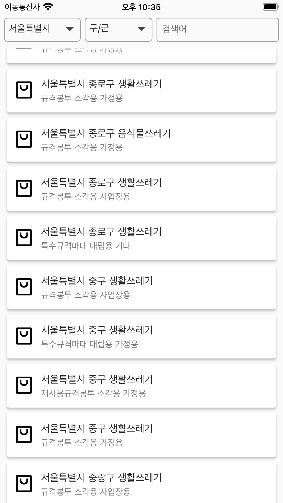
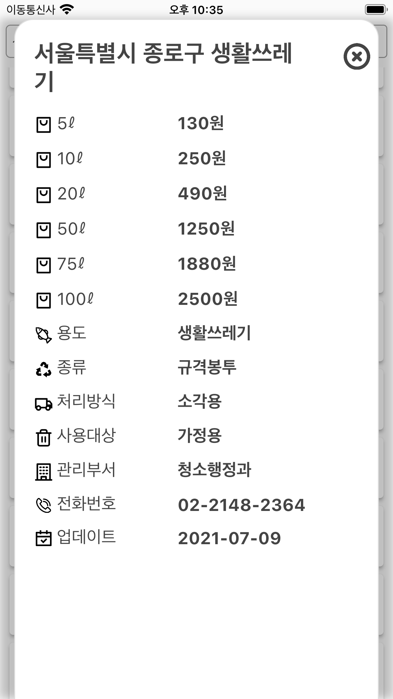

App support for 'Kr. Garbage Bag'
App download:

Contact us:
If you contact us at kaudo@msn.com, we will respond sincerely.
Only get envelope price data on first run.
No data is fetched from the second run.
The saved data is also deleted when you delete the app.

You can filter by city/district(gu/gun) of Korea by changing the drop-down box.
You can filter by entering keywords.
When you select a list, the top screen appears.

Garbage bag prices per liter are displayed.
You can check the purpose, type, processing method, and target of the envelope.